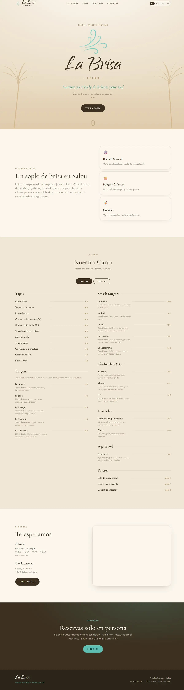

Bárbara Casco
Especialista en marketing, CRM y operaciones digitales con más de 8 años de experiencia. Convierte visitas en clientes.
Ver currículum«Visión estratégica, ejecución operativa y obsesión por los datos.»
CC Studio
Entra en nuestro ecosistema: webs y software que mueven negocios.
Captación & CRM
Leads, customer journey y equipos de hasta 30 personas.
Automatización & IA
Bots 24/7, email marketing y bases de +1,5M de contactos.

Webs que captan clientes
La Brisa Salou · carta digital y SEO local
Más de 8 años liderando operaciones digitales de alto volumen: equipos de hasta 30 personas, bases de más de 1,5 millones de contactos y canales omnicanal con más de 300 conversaciones diarias. Especializada en customer journey, automatización e IA aplicada (bots, scoring de calidad, email marketing) con impacto directo en resultados. Visión estratégica, ejecución operativa y obsesión por los datos.
-
CRM & Digital Operations LeadUniversidad de Palermo — Buenos Aires · en remoto desde Españaabr 2021 — actualidad
- Captación y conversión de leads omnicanal para una universidad con +60 carreras.
- Gestión de equipo interno (15 personas) + call center externo (15 agentes).
- Bots de IA en LiveChat y Zendesk Ultimate con resolución autónoma 24/7.
- SLA de respuesta <15 min en WhatsApp con +300 conversaciones diarias.
- Email marketing a bases segmentadas de +1,5M de contactos en Latinoamérica.
-
Asesora Comercial & CRM OperatorUniversidad de Palermo — Buenos Airesmay 2018 — abr 2021
- Gestión de leads y atención multicanal con foco en conversión; formación de nuevos asesores.
- Responsable interina del departamento durante un período sin dirección.
-
Asesora Comercial123 Seguro · Lacoste — Buenos Airesdic 2014 — may 2018
- Atención y asesoramiento comercial en canal presencial y telefónico.
-
CC Studio — webs y software con IA
- Cofundadora del estudio: 4 webs lanzadas para clientes de masajes, turismo náutico y restauración.
- Contenido, SEO local y captación apoyados en herramientas de IA (Claude, ChatGPT).